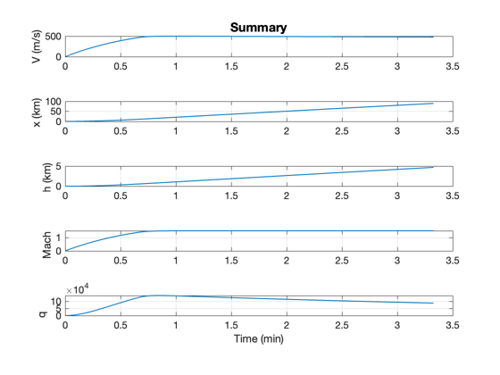
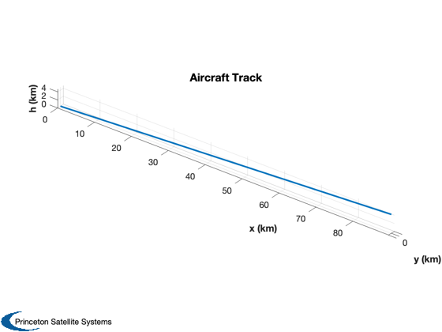
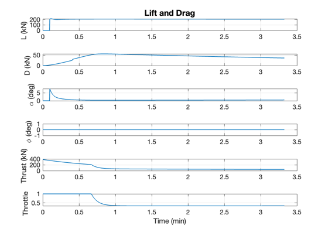

Contents
Aircraft takeoff demo.
The aircraft starts on the runway in takeoff mode. When it is moving at the takeoff speed it climbs. You can also try banked turns.
The parameters are for the F-35 fighter. They are only approximate. This demo uses ACPointMassControl.
Things to try:
1. Switch the mode to turn 2. Determine the ceiling for the aircraft 3. Determine the maximum speed for the aircraft
References: http://en.wikipedia.org/wiki/Pratt_%26_Whitney_F135
http://en.wikipedia.org/wiki/F-35_Lightning_II
%-------------------------------------------------------------------------- % See also LiftAndDragJonesSearsHaack, JetEngine, ACPointMassControl, % RHS3DPointAircraft, AtmData, StdAtm, Plot2D, Plot3D, TimeLabl, RK4 %-------------------------------------------------------------------------- %-------------------------------------------------------------------------- % Copyright (c) 2013-2014 Princeton Satellite Systems, Inc. % All rights reserved. %-------------------------------------------------------------------------- % Time step %---------- dT = 0.2; tEnd = 200; n = ceil(tEnd/dT); % Constants %---------- g = 9.806; vTakeoff = 100; radToDeg = 180/pi;
F-35 Aircraft model
%-------------------- % Aircraft %--------- massDry = 13300; massFuel = 8382; wingArea = 42.7; d = struct; d.lDData.l = 15.67; % Aircraft length (m) d.lDData.b = 10.7; % Span (m) d.lDData.s = 204; % Surface area (m^2) d.lDData.v = 10*pi*0.6^2; d.lDData.sL = wingArea; % Lifting surface (m^2) % Lift and drag model %-------------------- d.cDCL = @LiftAndDragJonesSearsHaack; cLAlpha = 2*pi; d.lDData.cL = cLAlpha; d.lDData.alpha = 0; d.mass = massDry; % Dry mass of aircraft (kg) d.atmData = load('AtmData.txt'); % Turbojet engine data %--------------------- d.thrustData.kM = -0.3; d.thrustData.tStatic = 2*191.3e3; % 2 F135 engines d.thrustData.kI = -1/2; d.thrustData.iSp0 = 10000; d.thrust = @JetEngine;
Control system data structure
%------------------------------- dC = struct; dC.gammaSet = 3*pi/180; dC.bankAngle = 0; dC.vSet = 400; dC.gainGamma = 0.5; dC.gainThrust = 0.2; dC.throttle = 1; dC.mode = 'takeoff'; dC.vTakeoff = vTakeoff; dC.alpha = 0; dC.machSet = 1.5;
Simulate
%---------- fprintf(1,'Demo %s\n','F-35 Simulation'); fprintf(1,'Dry Mass %12.2f (kg)\n', d.mass); fprintf(1,'Volume %12.2f (m^3)\n',d.lDData.v); fprintf(1,'Surface Area %12.2f (m^2)\n',d.lDData.s); fprintf(1,'Static Thrust %12.2f (kN\n',d.thrustData.tStatic/1000); % Initial conditions %------------------- x = [0;0;0;0;0;0;massFuel]; t = (0:(n-1))*dT; xP = zeros(16,n); for k = 1:n % Standard atmosphere %-------------------- p = StdAtm(x(6)); % Control system %--------------- dC = ACPointMassControl( x, p, d, dC ); % Pass data to the dynamics data structure %----------------------------------------- d.lDData.p = p; d.lDData.alpha = dC.alpha; d.phi = dC.bankAngle; d.throttle = dC.throttle; d.alpha = dC.alpha; % Get D, L and rho for plotting %------------------------------ [xDot, D, L, rho, thrust, mach, q] = RHS3DPointAircraft( x, t(k), d ); xP(:,k) = [x;D;L;rho;d.alpha*radToDeg;d.phi*radToDeg;thrust;mach;q;d.throttle]; % Update state %------------- x = RK4(@RHS3DPointAircraft, x, dT, t(k), d ); % Break if we run out of jet fuel %-------------------------------- if( x(7) <= 0 ) disp('Breaking due to lack of jet fuel') break end end
Demo F-35 Simulation Dry Mass 13300.00 (kg) Volume 11.31 (m^3) Surface Area 204.00 (m^2) Static Thrust 382.60 (kN
Plot
%------ % Limit the plot arrays if it the plane ran out of fuel %------------------------------------------------------ xP = xP(:,1:k-1); t = t(:,1:k-1); [t,tL] = TimeLabl( t ); % Convert to km %-------------- xP(4:6,:) = xP(4:6,:)/1000; % Convert to degrees %------------------- xP(2:3,:) = xP(2:3,:)*180/pi; % Convert to kN %-------------- xP([8 9 13],:) = xP([8 9 13],:)/1000; yL = {'V (m/s)' 'x (km)' 'h (km)' 'Mach' 'q'}; k = [1 4 6 14 15]; Plot2D(t,xP(k,:),tL,yL,'Summary',[],{},{},1,[],1) k = [4 5 6]; Plot3D(xP(k,:),'x (km)','y (km)','h (km)','Aircraft Track',[],1) k = [9 8 11 12 13 16]; yL = {'L (kN)' 'D (kN)' '\alpha (deg)', '\phi (deg)', 'Thrust (kN)' 'Throttle'}; Plot2D(t,xP(k,:),tL,yL,'Lift and Drag',[],{},{},1,[],1) %-------------------------------------- % $Id: 3032c248371d6027a7e833015be4fab80974bdff $  